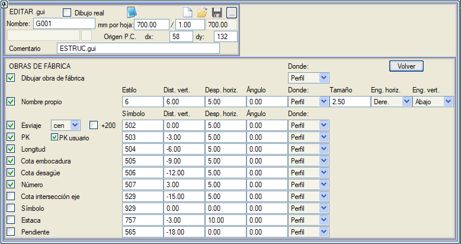

| |
|
BOYKESİT PAFTALARI İÇİN ŞABLONLAR: MENFEZ
|
Güzergahta tanımlanan menfezleri aşağıdaki diyalog kutusundan boykesitte göstermeyi sağlar: 
İlk kutucuk işaretlendiğinde, menfez, ilgili .obf dosyasının LSC komutundan sonra belirtilen sembolle boykesitte gösterilir. C1.obf dosyasına karşılık gelen aşağıdaki örnekte, kullanılacak sembol tipi 309 olacaktır:
# DENEME MENFEZ
#-------------------------- # ad #-------------------------- N 1 m'lik BORU #-------------------------- # planda çizim için #-------------------------- PL 64 .5 menfez eksenine paralel çizgi PL 64 -.5 menfez eksenine paralel çizgi PSE 90 1. 0 giriş ağzında sembol boyut 1 açı mnfz ekseni PSD 91 1. 0 çıkış ağzında sembol boyut 1 açı sy ekseni #-------------------------- # güzergahların boykesitinde çizim için #-------------------------- LSC 309 1. 0 Eksenle kesişimde sembol, boyut,... #-------------------------- SON Diğer veriler ise, KESİT menüsünün MENFEZ bölümünde tanımlanan veya hesaplanan verilerdir. Böylece, her bir menfezin adı boykesitte seçilen metin stiliyle ve çizildiği sembolün bağlantı noktasına göre dikey ve yatay bir öteleme ile gösterilecektir. Ayrıca bir açı, bir ölçek faktörü (boyut) ve etiketin yerleştirme noktasını (yatay ve dikey bağlantılar) belirtmek de mümkündür. İlgili kutucuklar etkinleştirildiğinde, boykesitte veya bilgi bandında, belirtilen sembol tipi, dikey ve yatay ötelemeler ve açılarla aşağıdaki veriler gösterilecektir:
 |